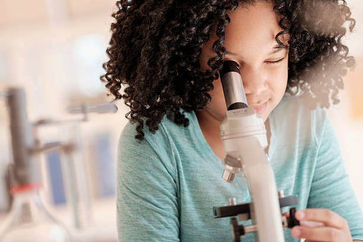

Student Research & Innovation Center
Welcome to the Student Research & Innovation Center (SRIC) — the heart of creativity, discovery, and technological advancement within our research hub. At SRIC, students from diverse backgrounds in Computer Science, Electronics, and Robotics come together to pioneer innovative solutions using IoT and emerging technologies.
- Empower Innovation: Access to world-class tools, mentorship, and labs.
- Foster Collaboration: Interdisciplinary teamwork on real-world challenges.
- Advance Research: Conduct and publish research globally.
